For the wooden “Round Table” set, complete with gold doubloons and a flippin’ coin.
Yer hungry. Ye came to the Isle of Tortuga to start a bakery — but yer pantry is empty!
Choose a secret recipe, then sail out and get yer five ingredients: dock for ’em,
barter for ’em, or take ’em by cannon. First captain home to Tortuga with a full hold
fires up the ovens and is crowned Best Baker in the Caribbean.
Setup: Build the Islands
1
Lock the board together. The four quarters o’ the sea
lock like a jigsaw — any quarter fits any corner. Drop the Isle of Tortuga on top in the
middle.
2
Scatter the islands. Put all island tiles in the bag.
Each captain draws one and sets it down, till seven are placed. Every island keeps one clear square
o’ water between itself and the outer ring, and between itself and Tortuga.
3
Set the docks. Continue one captain at a time: place
a dock against each island’s shore. Each dock sits on open water: keep it off the ring, and clear o’
Tortuga’s own four.
4
Stock the shelves. Continue one captain at a time:
on each island set ingredients of a single kind — yer choice which, till every island grows a
different one o’ the seven. Place one fewer than the captains at the table — 3 apiece for
4 players, 2 for 3, 1 for 2.
5
Sink the whirlpools. Each captain sets one whirlpool
tile on any square o’ the outer ring — at least 3 squares from the next closest one. Choose with
cunning.
The world ye’re raisin’, as the app deals it: Tortuga and her four docks amidships, seven
islands each with a dock, ingredients on their shores, and the trade-wind ring all round the rim.
(The gold squares are one captain’s sailin’ reach — page 2.)
Set sail
6
Choose yer recipe. Shuffle the 21 recipe cards and deal
two to every captain. Keep one — that’s yer secret recipe o’ five ingredients — and send the other
back to the box unseen. Hide yer recipe; the ingredients in yer hold sit in plain sight.
7
Draw lots for sailin’ order. Whoever ate a pastry most
recently sails first, then round the table clockwise.
8
Count yer gold — patience pays. The first captain takes
3
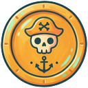
, and every captain after takes one more
than the one before: 4, then 5, then 6. No frettin’ about goin’ last — yer purse knows.
9
Moor the ships. Every ship starts tied up at one o’
Tortuga’s four docks.
10
Wake the weather. Spin the compass’s needle, then set
the WIND NOW flag to point in that direction — that’s day one’s wind. Then spin again to see
tomorrow’s sky (page 2). Now then. First captain — sail!
Yer turn — sail, then act
On yer turn ye may sail, then take one action. Both are yers to skip; the actions be:
Action
In one line
Detail
Sail (free)
Up to 4 squares — but the moment yer route bites into the wind, even for one square, the whole move is capped at 2.
below
Dock
In a dock: flip for buried treasure (HEADS: 3 , TAILS: 1 ), then ye may buy an ingredient.
page 3
Trade
Hail the whole table: say what ye want and what ye’ll give, strike one bargain.
page 3
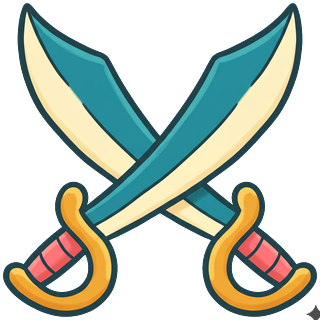
Attack
Fight a ship alongside ye: pay 2 for powder, one flip each. Winner takes an ingredient.
page 3
Bake
Return to Tortuga with yer whole recipe aboard — the winnin’ move.
page 4
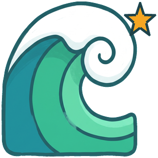
Pass
Take 1 from the bank and watch the sea go by.
—
Wind & weather — the top o’ every day
A day is one full lap o’ the table. Each mornin’, before a single sail is raised, the day’s first
captain tends the compass. The dial reads N · E · S · W — and the left fifth o’ each quarter is painted
storm , so one day in five the sky turns.
1
Set today’s wind. Turn the WIND NOW flag to where
the forecast needle points. If it pointed at a storm cloud, spin the needle to see which way the
storm blows, move the WIND NOW flag there — and the storm breaks (below).
2
Spin the forecast. Spin the needle again — where it
rests is tomorrow’s wind. Plan around it. If it lands on a storm but the last two days both stormed, spin
again — the sky has spent its fury.
Sailin’ the wind
Sail up to 4 squares, one at a time, north, south, east or west, mixin’ directions as ye please.
But if even one step o’ yer route goes dead upwind, yer whole move that turn is capped at
2 squares.
Sail past other ships as ye like — but never end on one.
Islands are land. Around, never over.
One ship to a dock. An occupied dock is closed to ye.
Ye may always stay put, snug as ye are.
When the storm breaks
At the beginning of a storm day, every ship is blown 3 squares downwind before anyone
acts, startin’ with the ship furthest downwind. Land and other ships stop ye short.
The trade winds & whirlpools
The sea round the rim o’ the world runs in one mighty clockwise current. Touch any ring square —
by sail or by storm — and ye’re swept clockwise to the next whirlpool, where yer movin’ ends. A
darin’ shortcut for a captain in a hurry — and a soakin’ for one who wasn’t payin’ attention.
The app’s compass bar on a fair day, and on a storm’s eve: the forecast turns to a cloud,
and the direction is nobody’s to know till it breaks.Sailin’ takes ye far if ye do it right: wind blowin’ north, four squares’ reach to the
north, east or west — but head south and only move two.
Dock — treasure, wages, and the market
Tied up at an island’s dock, flip yer coin: heads
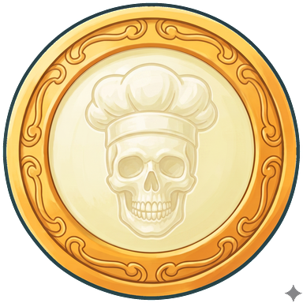
ye strike buried treasure and take
3 from the bank; tails
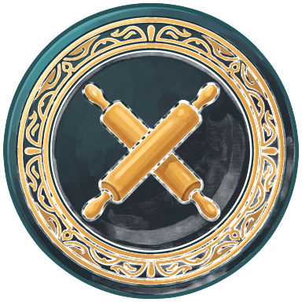
ye spend the turn workin’ the docks for
1 . Either way, ye may then
buy one ingredient off that island — with the very coin ye just earned, if ye like.
Prices climb as shelves empty. The first ingredient an island sells goes for
3 ; every ingredient after costs
one more than the last — 3, then 4, then 5. Get there first, or pay for dawdlin’. And aye, ye may
buy ingredients that aren’t on yer recipe — they make excellent trade bait…
The black market. When an island’s shelf is picked bare, the bank will part with one last
ingredient for twice the price of the last one — in a voyage with 4 captains the last
ingredient costs 5, so on the black market it runs 10
— and ye must still sail to that island’s dock
to collect it. Dear as sin, but no recipe is ever dead.
Stay moored and flip again next turn, as long as ye please.
An island with all three ingredients still on the shelf — the next one sold here goes
for 3.
Trade — hail the whole table
Sing out what ye want and what ye’ll give — ingredients, gold, or both. Every captain holdin’
what ye asked for answers, in sailin’ order: accept, deny, or name their own price. Hear
every answer together, then strike one bargain or walk away. One round o’ hagglin’ only — no counterin’
a counter. Cargo sits in the open, so the table always knows who holds what.
Attack — one broadside each
Fight a ship on a square alongside yers (north, south, east or west — no diagonals on these
seas). Ye can’t attack someone with an empty hold — there’s nothin’ for ye to take. Pay 2
to the bank for powder, then attacker and
defender each flip a coin:
Flip
What happens
vs
Heads beats tails — the heads ship carries the day.
+
The upwind ship wins the flip — so ye want to be upwind before ye attack. In a
crosswind, the cannonballs collide: no result yet.
+
The defender may slip away, free: sail off at once under the normal sailin’ rules, and
the battle ends with nobody gainin’ a thing. Or they stand their ground: no result yet.
No result? The attacker may pay 2
to load a fresh broadside and fire alone — heads and it lands, tails and they may pay again, as
often as their purse allows. Break off instead, and the battle ends with nobody gainin’ a thing —
and the powder’s spent all the same.
The spoils: the winner takes one ingredient o’ their choosin’ from the loser’s hold.
Nobody changes squares. A dock protects nobody — a moored ship can be attacked like any other. The
one safe harbor: a captain already bakin’ at Tortuga cannot be attacked.
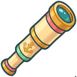
Callin’ the fight — the side bet. Before the first coins fly, every captain not in the scrap may
call the winner from the crow’s nest, free. It costs ye nothin’ to be wrong, and a true call pays
2 from the bank when the smoke clears.
A battle with no winner pays no caller.
The wind settles ties. If the wind is blowin’ south, the ship to the south
loses in heads-heads flips. Pick yer moment, and yer square, before ye pick yer fight.
Pass. Any turn may simply
end: take 1 from the bank, lean on the
rail, and tell the crew what strange beast ye spied in the water. They’re obliged to listen.
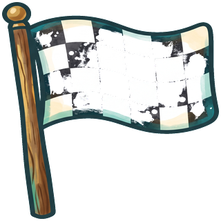
Winnin’ — The Bakeoff
Moored at Tortuga with every ingredient in yer recipe? Then declare “Bake!” as yer
action. Then the ovens are lit.
At the end of each day, every captain at the ovens attempts the bake: ye must add yer
ingredients in order! The captain to yer left lays yer ingredients out in any order, in
plain view, then covers each with a crate. They make three slow swaps, one pair at a
time, while ye watch. Keep yer eye on ’em.
Now name ’em back: point to the crates in yer recipe’s order, flippin’ each as ye call it.
A true call stays face-up — and stays solved for every attempt after. Yer first miss ends the
attempt (turn it back over, and no peekin’).
All five face-up — YE BAKED IT! The first baker to finish the bakeoff wins; the
voyage ends with that day. If two captains bake the same day, whoever holds the most ingredients
takes the crown, then the most gold. Otherwise: tomorrow evenin’ the hider re-hides only yer
unsolved crates, three fresh swaps, and ye try again. Every other captain gets another turn in
the meantime.
Pay 1 before guessin’ to watch
the swaps done over, slow — as many times as yer purse can bear. Gold’s last, best use.
Tortuga: home port, four docks, and the finish line.
A day on the Sugar Seas — quick reference
Weather: turn the WIND NOW flag to the forecast; in a storm, spin for the storm’s direction
and blow every ship 3 downwind. Then spin the forecast for tomorrow.
Each captain, in order: Sail (up to 4; any upwind step caps it at 2), then either:
Dock · Trade · Attack · Bake · Pass.
First baker to finish the bakeoff wins.
The numbers
Startin’ gold, by sailin’ order
3 · 4 · 5 · 6
Sail / sail against the wind
4 / 2 squares
Dock flip: heads / tails
3 / 1
Ingredients, per island
# of captains − 1
Price: 1st · 2nd · 3rd sold
3 · 4 · 5
Black market (shelf bare)
2× the last ingredient
Powder / fresh broadside
2 / 2
True battle call
+2
Pass
+1
Storm shove
3 squares, every ship
Storm odds
1 day in 5
In the chest
The sea, in five pieces — four quarters and Tortuga
7 island tiles · 7 docks with moorin’ posts
28 ingredients (four o’ each) · crates to cover ’em
4 whirlpool tiles · 4 ships
The wind compass — dial with storm wedges, spinnin’ needle, and the WIND NOW flag
21 recipe cards · a bag for the islands
Gold coins, and one big doubloon fit for flippin’
The seven ingredients
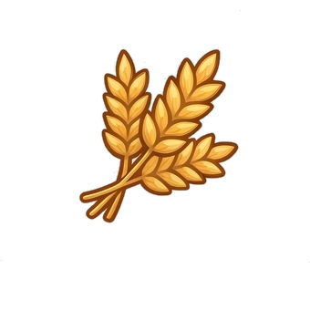
Toasty Wheat Speckled Eggs
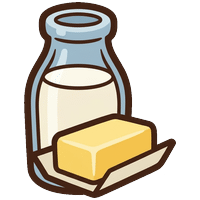
Fresh Milk Rock Sugar
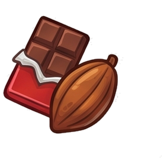
Cacao Pods
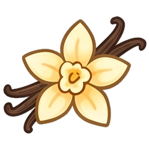
Vanilla Beans Hot Cinnamon
Every recipe card is five o’ these seven.
Rules edition 2.0 — matched to the game at playpastrypirates.com.
 Speckled Eggs
Speckled Eggs Rock Sugar
Rock Sugar Hot Cinnamon
Hot Cinnamon